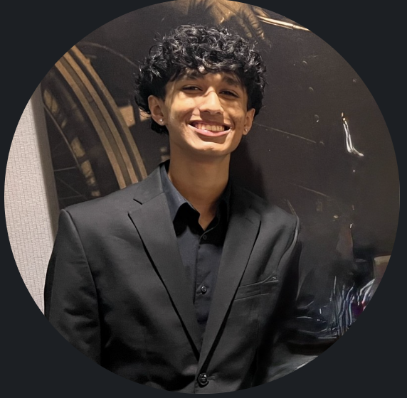

About Me

I am Arav Desai, a high school student in the Independent Study and Mentorship program, and I am passionate about entrepreneurship, startups, AI, and how these things can turn ideas into real impact. I'm especially interested in how AI, strategic planning, and preparation can lower the barrier for students who want to create something meaningful but don't know where to start. This project reflects my curiosity, my willingness to explore beyond my original plans, and my goal of building tools that help others move from a vision to a venture.
ISM has transformed me not just as a student, but as a person. Through this program, I've learned to think critically, communicate professionally, and pursue my passions with confidence. The connections I've made with mentors like Mr. Harsh Tanna and professionals that I met through different events throughout the year, have opened doors I never knew existed, and the research and original work I've created have given me a deeper understanding of who I am and where I want to go for college. ISM has taught me that learning extends far beyond the classroom. It's about building relationships, taking initiative, and turning curiosity and ideas into action.